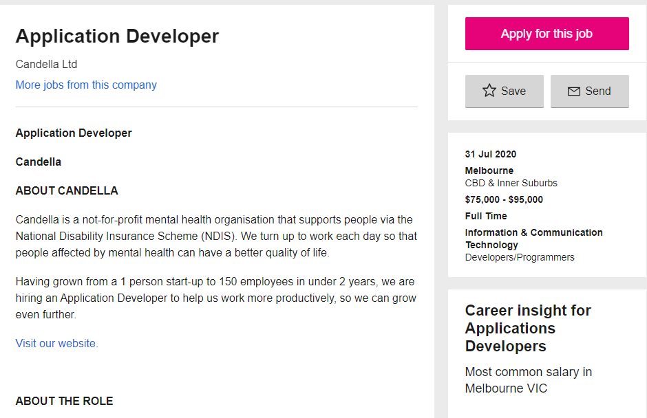
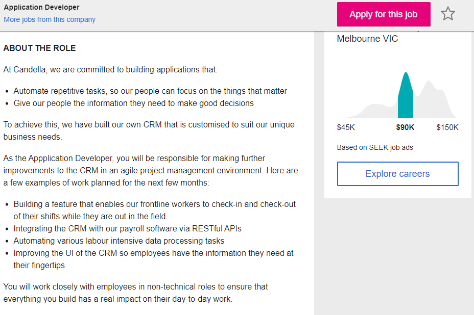
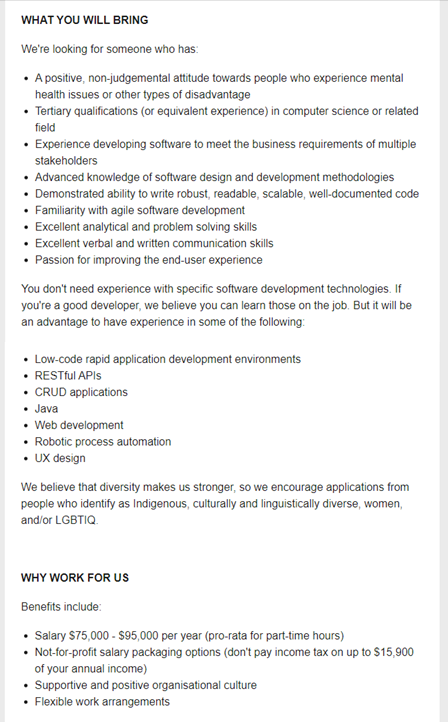
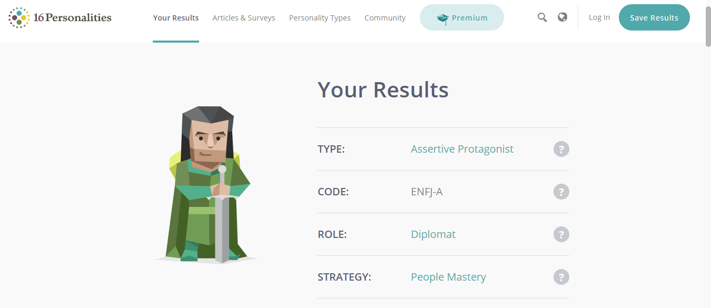
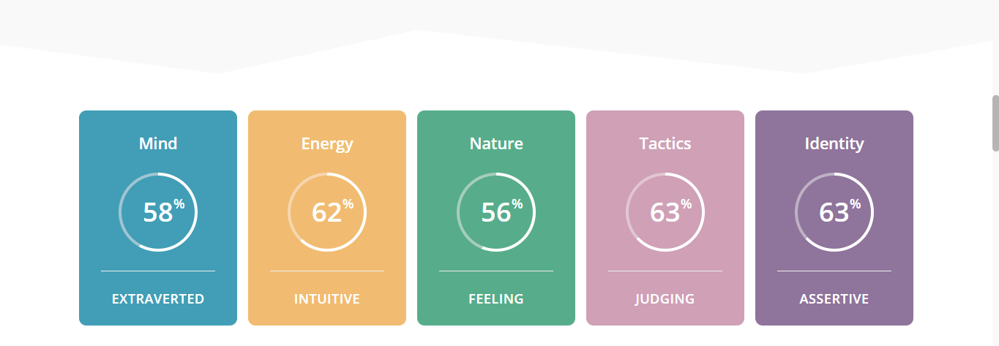

I'm Taneshwar. I love playing sports (favourites are Badminton and Cricket) and have been playing badminton for almost 7 years now. I enjoy traveling and listening to music as well as meeting new people. In my spare time I mainly watch movies or play games.
My interests in IT are varied, mostly I enjoy solving problems and helping others out but I also like finding out how things work and ways to improve them. When I was younger I use to open things we had at home like an old CPU to see if I could figure out how it worked. I’ve been interested in IT since I was in primary school, we had a ICT class which sparked my interest in IT as well as my dad who used to teach IT when he was younger. I’ve had some programming experience in high school where I did java, html, css and php. I also learnt about databases and game design and created my own 2D platformer in year 10.
The main reason I came to RMIT was that the course was appealing to me as it offered a variety of majors to select from. RMIT has a great reputation in teaching and industry connections, also I’ve heard a lot about RMIT through family and friends as well as from people that have studied here which is why I chose it over other universities.
Throughout my degree I expect to learn all the necessary skills (soft-skills like written and verbal communication and technical skills like programming) that will help me stay competitive in the market when I graduate.
Application Developer:
https://www.seek.com.au/job/50321909?type=standard#searchRequestToken=4d307f8d-1542-4eba-87b1-a343ee4c58caThis position is about developing software to reduce the amount of repetitive tasks done by staff members of the company so that they can spend their time doing more important things. This position is appealing to me as it is a not-for-profit organisation and is all about helping other people which I find to be an important factor in my future career.
As the role is about building applications using software I believe it requires me to have good knowledge about current software development technologies, User-experience, problem solving abilities and other technical skills related to software development. Also I believe that I would need the soft-skills like written and verbal communication as they are vital skills in any industry as well as some experience developing software to show that I am a suitable candidate for the job.
I currently have some experience in programming, web development and game design as well as databases. I currently don’t have any qualifications however I have got some projects that I could use to present my technical and creative skills. I have also done volunteer work which has taught me valuable lessons.
I plan on developing projects on the side during my degree as I gain the necessary skills to show that I am self-motivated and can work independently. I also want to participate in building different projects which would help me improve my teamwork abilities and my creativity as well as allow me to learn from my peers and become better at my craft. I will also attempt to participate in events held by RMIT like FutureEdge to improve my understanding of what employers are looking for in applicants and use that knowledge to better prepare myself.
  Links to tests done:
Test 1 (16Personalities): https://www.16personalities.com/free-personality-test
Test 1 (Learning Style): http://www.emtrain.eu/learning-styles/
Test 3 (Personality Perfect): https://www.personalityperfect.com/test/free-personality-test/
The results from the tests shown down below indicate that my personality types are Assertive Protagonist ENFJ-A (16Personalities), ESTJ- The Supervisor (PersonalityPerfect) and my learning style quiz by LifeTrain. They reflect some of my personality traits and don’t mean much to me, however they do give an indication of my personality which is beneficial for future employers who seek to fill in positions with specific people. The results do indicate that individuals with my personality traits prefer group work, I believe that these results could potentially give an idea of my behaviour for working in teams however cannot be used to fully assess my team work abilities. I should use these results to find team members that are as hardworking as me and enjoy group work, also I could use the learning style quiz results to find members that have a similar way of learning as me so we can easily help each other out.
Test 1 Results-  The project idea involves using Raspberry Pi and creating an application that allows for a live count of people in a building by using sensors like Infrared (IR) Break Beam Sensors and temperature sensors to monitor the amount of people that enter and exit a building, this could allow for businesses to keep track of the amount of people that are inside a building at any given point which is beneficial in this time because it would ensure that they can follow the restrictions of the maximum number of people allowed in a building at any given time. The data collected by this device could also be stored and used to improve business performance, e.g. it can be used with the amount of items sold during a given period with the amount of people that were in the store at the given time to calculate the person to sales ratio.
The project would be interesting to work on and would be useful in the setting today, as it would replace the repetitive tasks performed by humans. If businesses keep staff outside the store to manage the amount of people in the store there can be errors as humans can easily get distracted and miss anyone entering or exiting a building. According to a survey conducted by Udemy in 2018, 70% of workers admitted to being distracted at work which clearly indicates that human error is unavoidable [1] (Udemy In Depth: 2018 Workplace Distraction Report - Udemy Research, 2018).
The aim of the project could help businesses follow government restrictions to a higher degree which could potentially reduce the chances of them being broken. The live count feature could also help in the situation of emergencies such as a fire because it could display the amount of people that were inside a building at a given time which could help the firefighters with doing their job. It will be an interesting project to work on because it involves working with new technologies such as Raspberry Pi that I haven’t used before, this will help me expand my knowledge of the different technologies in the market.
The features of the project include an application that will show a live count of people within a building, also the data will be stored so it can be used later to evaluate stuff like the peak hours for the business in terms of how many people were in the store. The device could also be used for security by connecting the Infrared (IR) Sensors to an alarm system which would be armed during the hours the business is closed, this is beneficial as it would increase the security of the business and reduce the chance of it being robbed.
The whole system would be small in size therefore it would allow for it to be moved to different places from time to time. The application that displays the live count of people inside a building could also be used by firefighters in the event of an emergency such as a fire, as it would give them an idea of how many people are currently inside the building which they can use to quickly come up with the best strategy to use. The project involves using sensors connected to a mini computer like the Raspberry Pi, this means that it can be used a lot of different ways. Another way this could help firefighters is by placing these sensors on roads that are located inside high bushfire areas, they can use the application that provides the live count to identify how many cars are inside a given zone when a bushfire occurs which could help them in their strategy planning.
There are many ways this application could be incorporated into our society to help make it a safer place by using it for security, emergencies and other appropriate reasons. Also the cost to make these systems will be much lower than purchasing ones in the market as they are fairly expensive.
The project would need to incorporate hardware (Raspberry Pi, sensors like Infrared Beams and other types of sensors) and software (an application that displays the data collected by the hardware in an easy to interpret manner) in order to function properly, it could use two Infrared (IR) Break Beams connected to a Raspberry Pi (or similar small computers that can be connected to the sensors) which would be positioned horizontally at a certain height to ensure they don’t miss anyone.
They will be placed like invisible hurdles where there is distance between them, this would allow for the device to identify if a person is entering or exiting a building. This will be done through software that evaluates which IR Beam goes off first, we can number the IR Beams in the order of 1 and 2 where 1 is the first invisible hurdle that you would hit if you entered through the entrance and 2 is the one you would hit after passing the first one.
This would allow for the program to differentiate between a person entering and exiting, by using the data returned from the IR Beams (if 1 goes off first and then 2 it would mean someone is entering and if 2 goes off first then 1 it would indicate that someone is exiting). Also we would need software to make an application that can present all the information that will be collected by our hardware equipment.
The skills required to complete my project are programming skills in Python or Scratch to code the Raspberry Pi to be able to complete all the required functions and also some SQL knowledge if data is to be stored for evaluation in the future. Skills in creating a user-friendly application would also be beneficial as that is the way data is going to be shown to the users. Hardware knowledge on sensors and other equipment would come in handy too as it would allow for the selection of the most appropriate parts for the project.
If the project is successful then it would allow for businesses to reduce the amount of staff needed to manage the flow of people within stores. Also it would mean that the restrictions given by the government could be followed to a greater standard which would reduce the chances of a business being fined. The project could potentially help out with our community as it could help in emergencies by providing firefighters or other emergency services with live information about the number of people in a building or zone.